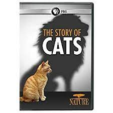

the story of cats
The cat (Felis catus) is a domestic species of small carnivorous mammal. It
is the only domesticated species in the family Felidae and is often referred
to as the domestic cat to distinguish it from the wild members of the
family. A cat can either be a house cat, a farm cat, or a feral cat; the
latter ranges freely and avoids human contact.

Etymology and naming
The origin of the English word cat, Old English catt, is thought to be the
Late Latin word cattus, which was first used at the beginning of the 6th
century. It was suggested that the word 'cattus' is derived from an Egyptian
precursor of Coptic ϣⲁⲩ šau, "tomcat", or its feminine form suffixed with
-t. The Late Latin word may be derived from another Afro-Asiatic or
Nilo-Saharan language. The Nubian word kaddîska "wildcat" and Nobiin kadīs
are possible sources or cognates. The Nubian word may be a loan from Arabic
قَطّ qaṭṭ ~ قِطّ qiṭṭ. It is "equally likely that the forms might derive
from an ancient Germanic word, imported into Latin and thence to Greek and
to Syriac and Arabic". The word may be derived from Germanic and Northern
European languages, and ultimately be borrowed from Uralic, cf. Northern
Sami gáđfi, "female stoat", and Hungarian hölgy, "lady, female stoat"; from
Proto-Uralic *käďwä, "female (of a furred animal)". The English puss,
extended as pussy and pussycat, is attested from the 16th century and may
have been introduced from Dutch poes or from Low German puuskatte, related
to Swedish kattepus, or Norwegian pus, pusekatt. Similar forms exist in
Lithuanian puižė and Irish puisín or puiscín. The etymology of this word is
unknown, but it may have simply arisen from a sound used to attract a cat. A
male cat is called a tom or tomcat (or a gib, if neutered). An unspayed
female is called a queen, (or a molly, if spayed), especially in a
cat-breeding context. A juvenile cat is referred to as a kitten. In Early
Modern English, the word kitten was interchangeable with the now-obsolete
word catling. A group of cats can be referred to as a clowder or a glaring.